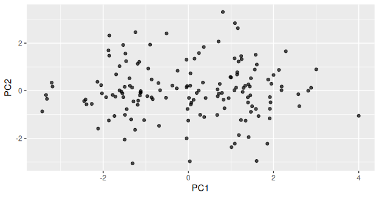
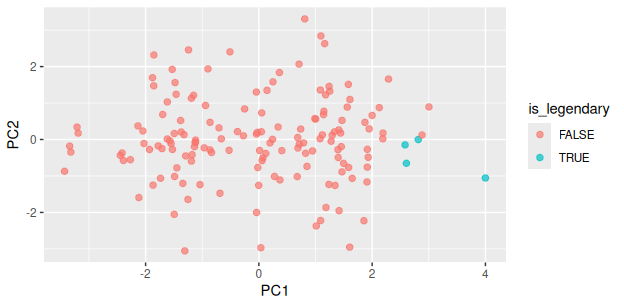
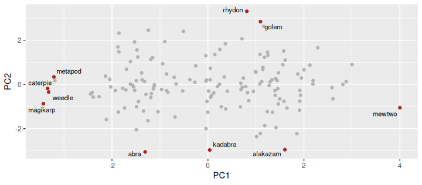
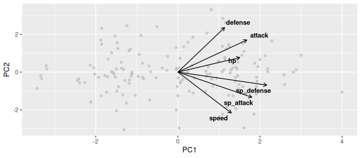

What PC2 means, and finally drawing the picture
2026-11-10
prcomp(poke_stats, center = TRUE, scale. = TRUE)Note
✅ Transition
Three things were missing: what PC2 means, a picture, and a way to see the original stats on that picture. All three today. 🔴
ggrepelNote
🧠 Every script starts from the raw data
Nothing today depends on objects left over in last class’s session. Restart R, run from the top, and you get the same answer.
If a script only works because of something you ran yesterday, it is broken — you just cannot see it yet.
We will cover: the loadings table in full, the mixed-sign rule, and naming PC2.
PC1 PC2 PC3
hp 0.38 0.19 0.72
attack 0.42 0.43 -0.26
defense 0.28 0.59 -0.41
sp_attack 0.45 -0.33 -0.06
sp_defense 0.54 -0.17 0.23
speed 0.32 -0.54 -0.44Note
One row per original stat. One column per PC.
A loading is how much that stat contributes to that axis. Big number = matters a lot. Near zero = barely involved. The sign tells you which direction.
Read down the PC1 column:
| Stat | Loading |
|---|---|
sp_defense |
0.54 |
sp_attack |
0.45 |
attack |
0.42 |
hp |
0.38 |
speed |
0.32 |
defense |
0.28 |
Every one positive, and none of them tiny. To score high on PC1 you must be high on everything.
Important
✅ The rule for all-positive
An axis where every loading shares a sign is a “total” axis — an overall size, overall strength, overall abundance.
You will see this constantly. PC1 is very often a total, because the single biggest way things differ is usually just how much of them there is.
Now read down PC2:
| Stat | Loading | |
|---|---|---|
defense |
+0.59 | ⬆️ |
attack |
+0.43 | ⬆️ |
hp |
+0.19 | |
sp_defense |
−0.17 | |
sp_attack |
−0.33 | ⬇️ |
speed |
−0.54 | ⬇️ |
Two big positives and two big negatives on the same axis.
Important
✅ The rule for mixed signs
Mixed signs mean a trade-off, not a total.
PC2 is not measuring how much. It is measuring which kind — being strong in one way instead of another.
High PC2 = defense + attack. Low PC2 = speed + sp_attack.
So high PC2 means tough and hard-hitting but slow. Low PC2 means fast and special-attacking but fragile.
Anyone who has played the game has a name for these:
PC2 is a “tank ↔︎ glass cannon” axis, and it carries 21.5% of all the variation in six columns.
Warning
⚠️ You named it. The maths did not.
prcomp() returned a column of numbers labelled PC2. It has no idea what a tank is.
Naming an axis is interpretation, and it is your responsibility. It is also the single most valuable thing you do in a PCA — and the easiest place to fool yourself.
# A tibble: 4 × 4
name defense speed PC2
<chr> <dbl> <dbl> <dbl>
1 rhydon 120 40 3.31
2 golem 130 45 2.84
3 cloyster 180 70 2.63
4 rhyhorn 95 25 2.46Top of PC2: Rhydon, Golem, Cloyster, Rhyhorn — defence 95 to 180, speed 25 to 70. Rocks.
Bottom of PC2: Abra, Kadabra, Alakazam, Jynx — defence 15 to 45, speed 90 to 120.
Alakazam is the fastest, most fragile special attacker in the game. Golem is a literal boulder. They are at opposite ends of an axis that was built from nothing but six columns of numbers.
Important
✅ The two-step, every time
Do them in that order. If step 2 disagrees with step 1, believe step 2.
We will cover: plotting 151 Pokémon on two invented axes.

Every dot is one Pokémon. Neither axis is a thing anyone measured — both were invented by prcomp().
Two dots close together = two Pokémon with similar stat profiles overall. That is the question we could not answer with 15 pairwise scatterplots.
And this flat picture holds 61% of six columns.
Note
🧠 The origin is average
The scores were centred, so (0, 0) is the average Pokémon — not zero power.
A dot at the far left is not “no stats”. It is well below average.

The four legendaries sit in a cluster at the far right — high PC1 — and slightly low on PC2.
So the game’s strongest Pokémon are not just powerful; they lean a little towards the fast, special-attacking side rather than the tank side.
Nothing in the PCA knew which Pokémon were legendary. The is_legendary column was never given to prcomp() — we only used it to colour the result.
Important
✅ That is the right way round
Build the axes from the measurements only. Then colour by the thing you care about and see whether it lines up.
Put the grouping variable into the PCA and you have built the answer you wanted — the same circular trap as the wētā’s head_length.
We will cover: why 151 labels is unreadable, and ggrepel.
The obvious next step is to put names on the dots. With 151 Pokémon, that gives you a solid black rectangle.
So label only the extremes — the ones furthest from the centre, which are the ones a reader will ask about.
One way to pick them: keep anything in the top 3% on either axis, in either direction.
Note
🧠 abs() and quantile()
abs(PC1) is distance from the centre, ignoring direction.
quantile(abs(PC1), 0.97) is the value only 3% of Pokémon exceed.
Together: “far from average on PC1, either way.”
[1] 10# A tibble: 5 × 3
name PC1 PC2
<chr> <dbl> <dbl>
1 caterpie -3.34 -0.180
2 metapod -3.21 0.339
3 weedle -3.32 -0.344
4 abra -1.31 -3.05
5 kadabra 0.0355 -2.97 
Three layers, and the order matters:
geom_point(color = "grey70") — all 151, in the backgroundgeom_point(data = extremes, ...) — the interesting ones, on top, in redgeom_text_repel(data = extremes, ...) — names, only for thosegeom_text_repel() is ggrepel’s version of geom_text(). It nudges labels apart so they do not sit on top of each other, and draws a little line back to the dot.
Tip
🎯 data = inside a layer
Each geom_ can take its own data =. Give it one and that layer ignores the data in ggplot().
That is how you draw two different subsets on one plot — and it works for every geom, not just these.
We will cover: putting the original six stats back onto the picture.
Our plot shows where Pokémon sit. It does not show which direction each original stat points.
A biplot draws both at once:
An arrow points the way that stat increases. Long arrow = strongly involved in these two axes. Arrows pointing the same way = correlated stats.
Note
🧠 “Bi”-plot
Two things on one plot, in two different units.
R has a built-in biplot(poke_pca). It is ugly and hard to control, so we will build ours from the loadings — which also means you will know exactly what the arrows are.
# A tibble: 6 × 3
stat PC1 PC2
<chr> <dbl> <dbl>
1 hp 1.51 0.770
2 attack 1.68 1.70
3 defense 1.14 2.36
4 sp_attack 1.80 -1.33
5 sp_defense 2.16 -0.690
6 speed 1.30 -2.16 Warning
⚠️ Why * 4
Loadings run about −0.6 to +0.6. The scores run about −3.5 to +3.5. Draw the arrows at their true length and they vanish into a dot at the centre.
Multiplying by 4 is purely cosmetic — it makes them visible. It changes the arrows’ lengths on screen, never their directions, and the directions are the part you interpret.

defense points up-right, speed points down-right. They are nearly opposite vertically — the trade-offattack sits with defense; sp_attack and sp_defense lean with speeddefense has the longest arrow, hp the shortest — so hp is the stat least involved in these two axesImportant
✅ Angles, not positions
Check it against Part 4 of last class: speed and defense had r = −0.05… yet here they look opposed. Why? Because the biplot shows only these two axes — 61% of the picture, not all of it.
speed and defense have a real correlation of −0.05 — essentially unrelated.
But on this biplot their arrows point in nearly opposite directions, which looks like a strong trade-off.
Both are true. The biplot is a shadow. Two arrows can look opposed in the shadow while being unrelated in the full six dimensions.
Warning
⚠️ So always say how much you are showing
“PC1 and PC2, which together explain 61.1% of the variance”
Without that number, a reader cannot tell whether your biplot is the whole story or three-fifths of it.
Never show a biplot without its percentages.
Important
📝 No p-value, so the structure is different
Six battle statistics for the 151 original Pokémon were standardised and reduced by principal component analysis. The first two components explained 61.1% of the total variance (PC1 39.6%, PC2 21.5%). PC1 loaded positively on all six statistics (0.28 to 0.54) and is interpreted as overall power: the four legendary Pokémon averaged PC1 = 3.00 against −0.08 for all others, and Magikarp held the lowest score. PC2 contrasted
defense(+0.59) andattack(+0.43) againstspeed(−0.54) andsp_attack(−0.33), separating durable, slow-moving species such as Golem and Cloyster from fast, fragile ones such as Alakazam.
scale. = TRUE)Warning
⚠️ The two failure modes
Too little: “We ran a PCA and PC1 explained 39.6%.” Explained of what? Meaning what?
Too much: “PC1 proves power is one-dimensional.” PCA proves nothing. It describes.
Describe, name, justify. Stop there.
Take all 1,025 Pokémon — the file from last class’s homework — and do today’s four chunks on it:
All the code is written. The marks are for the naming and the write-up.
Tip
🎯 One thing to watch for
With 1,025 Pokémon your scores plot has 1,025 dots. It will look crowded.
One of the questions asks what you would change to make it readable — and “label fewer things” is a perfectly good answer.
geom_text_repel(), with its own data =Note
✅ Next
Open the activity and run it. Then all 1,025. 🔴